The code of Eastern aesthetics across a thousand years is hidden in these color cards!
When a Northern Song painter laid down the last stroke of cinnabar on the slope of Sheli Hill, he could not have imagined that a thousand years later those faded mural colors would become the ultimate color inspiration library of Eastern aesthetics.
A team from the School of Architecture at Tsinghua University used scholarship as their measure and art as their brush. They brought the Northern Song mural colors of Kaihua Temple in Gaoping, Shanxi, into the modern day. The book is Color Cards of Ancient Northern Song Architecture: Kaihua Temple, Gaoping, Shanxi. It is an inspiration library that makes art history come alive, and it officially launches today.
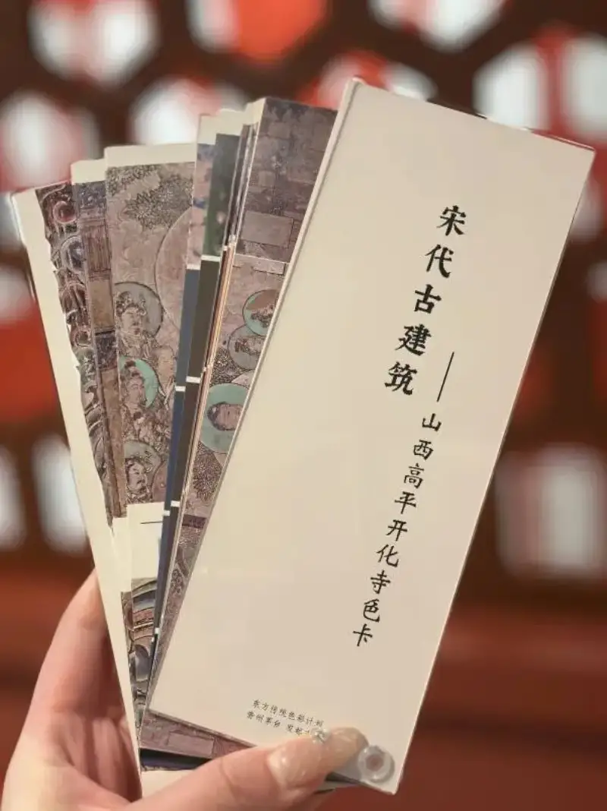
Part One: Highlights of the Color Cards
An Archaeological Experiment in Northern Song Color
Six color families, 17 classic color charts. From the cold depth of azurite blue and malachite green to the warmth of cinnabar and ochre, every color comes from precise collection at the original building site. The research team used microscopic images and color-value analysis (RGB/CMYK/Lab) to restore the unique texture that Northern Song painters gave to smoke and fire seen between blue-green mountains.
A double dialogue between science and aesthetics. The cards do not only label color names. They also reveal the material composition of pigments (such as iron red, lead red, and cinnabar). They untangle the thousand-year puzzle of traditional colors that share one name but look different. They give a reliable basis for building restoration and art creation. Source: School of Architecture, Tsinghua University, Color Chart of Ancient Northern Song Architecture: Kaihua Temple, Gaoping, Shanxi.
A living proof of Yingzao Fashi. Yingzao Fashi is the Northern Song official manual for building design. The Kaihua Temple murals closely match the official painted decoration of Northern Song buildings. Their layered shading method, which creates depth through gradual changes in lightness, and their five-color full-decoration patterns are a three-dimensional textbook of Yingzao Fashi.
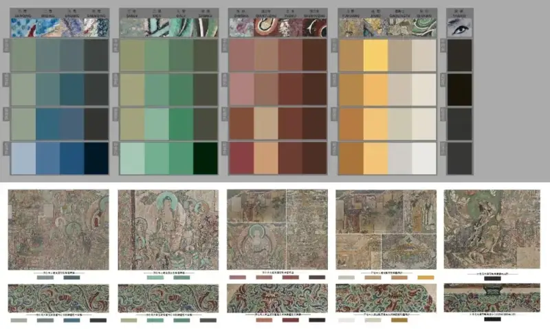
Image source: the journal Zhuangshi, article Shaping Space with Color: A Preliminary Study of the Color Design Ideas of the Main Hall of Kaihua Temple in Gaoping, Shanxi.
Part Two
Why is the art world waiting for it?
The painted decoration of the Kaihua Temple main hall is the most complete surviving example of a Northern Song wooden building on the ground. The blue-green main tone and the warm-cool contrast in the cards show how Song painters used color to trick the eye. For example, the raised-and-flower technique on the bracket-eye wall looks like relief from far away, but it is flat up close (Figure 18, cited from Jiankang Shilu.).
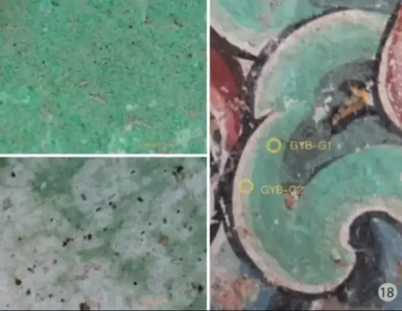
Image source: the journal Zhuangshi, article Shaping Space with Color: A Preliminary Study of the Color Design Ideas of the Main Hall of Kaihua Temple in Gaoping, Shanxi.
The Buddha's head halo in the murals uses layered shading of green and white to mimic a glow. The skin tones of the figures are redrawn with tender red. The detail rivals a Northern Song version of a high-end filter. The cards turn these techniques into reproducible color steps. Copying old paintings now has a basis to follow.
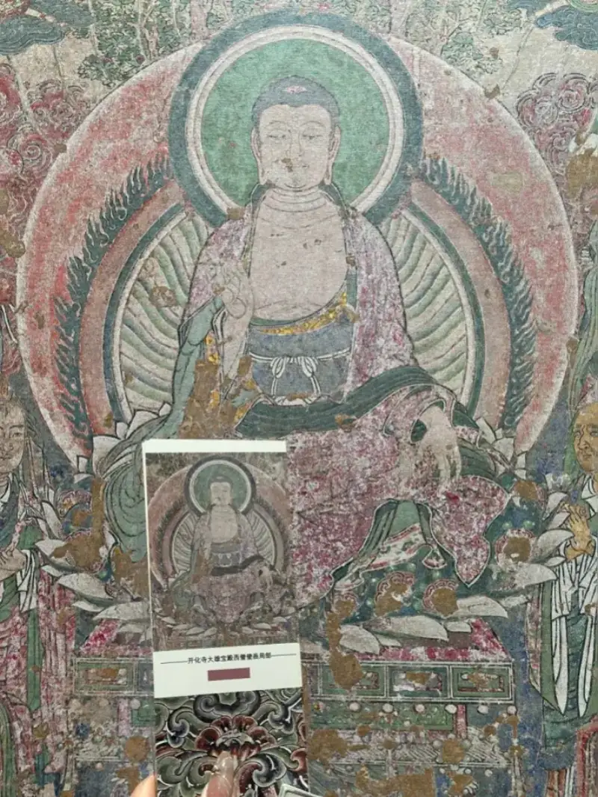
The refined quality of Northern Song aesthetics lies in the low-saturation colors of daily life. The lead-white and light ink-gray of the murals can become the muse for next season's fashion design.
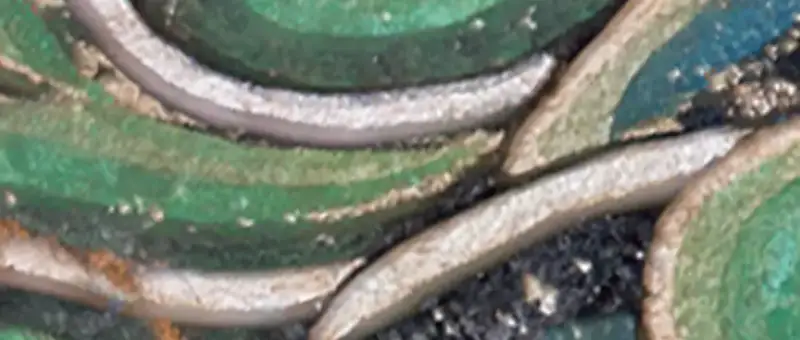
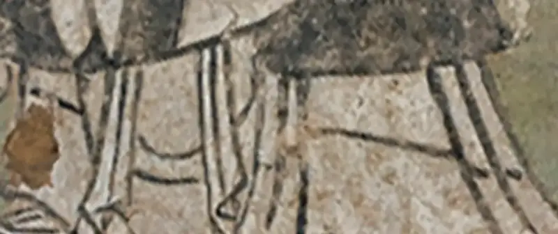
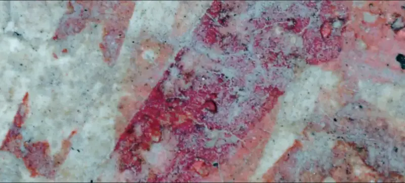
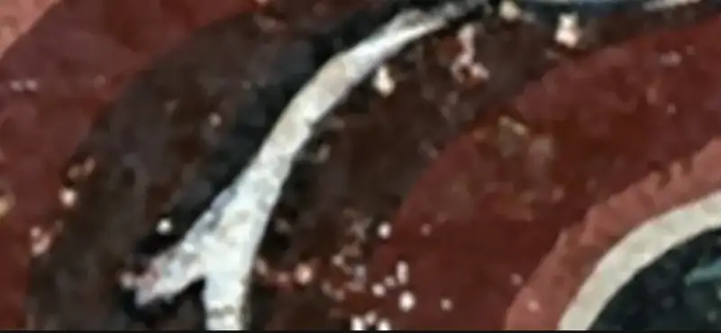
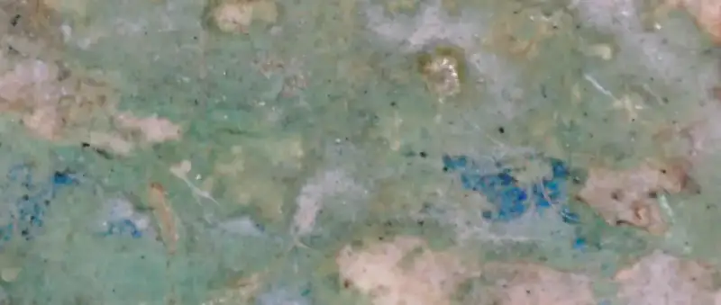
Part Three
The Design Philosophy Hidden in the Color Cards
Northern Song painters used color to tell stories. The warm red of the west wall tells worldly legends. The cold blue of the east wall outlines the solemn world of the Buddha. This color zoning does not only shape the layers of space. It also matches the Buddhist rite of walking clockwise around the sanctuary. As the stone inscription of the Daguan era, year four, says: 'When painted bright, respect arises at once.' Color is itself a silent teaching.
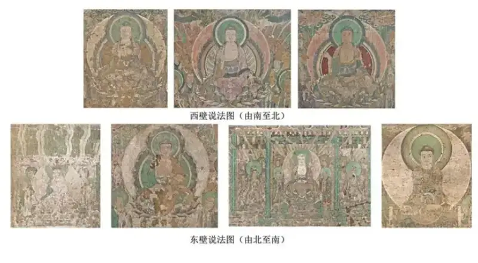
Part Four
How can you use it to light up your creative work?
Building painted decoration. Follow Kaihua Temple's logic of blue-green as the bone and cinnabar as the eye. Revive the visual genes of traditional buildings.
China-chic design. Extract the cards' flowing white of the jeweled necklace and the pale ochre of the deer girl. Build a new Chinese-style color scheme.
Art copying. Use scientific color values to crack the fading code of old paintings. Restore the fresh texture of the original Northern Song works.
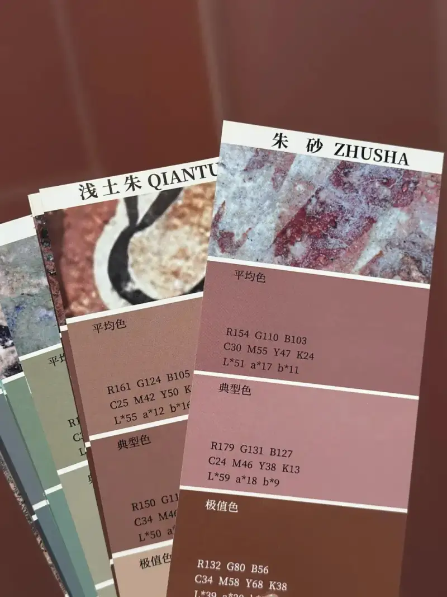
Friendly note. The cards are printed. Because light and material differ, the physical cards can look slightly different from the screen. Store them in a dry place, and replace them from time to time to keep the color accurate.
In 2024, with the support of Kweichow Moutai, Chinese institutions and scholars launched the Eastern Traditional Color Plan together. They built a research platform to explore new modern uses of traditional colors. Drawing on the deep scholarship and research strength of the Institute of Architectural History and Theory at Tsinghua's School of Architecture, the book Color Cards of Ancient Northern Song Architecture: Kaihua Temple, Gaoping, Shanxi came into being. This study starts from the ancient buildings of Kaihua Temple in Gaoping, Shanxi. Its goal is to build an information system centered on the materials, techniques, and visual qualities of Northern Song official painted decoration. It aims to improve the body of knowledge about ancient Chinese building decoration.
The research team wrote in the color-chart notes: 'The cards include both the original colors and the aged colors.' This is exactly the most honest side of traditional color. It does not try to recreate one brilliant moment. It shows plainly the fate of color as a material. Color sets on silk, ages among wood and stone, and is reborn through chemical action. Like a coffee stain on a lapel, a curtain faded by sunlight, or a smear of crayon in a child's sketchbook, every color finally finds its place in time.
Perhaps the real aesthetics of color does not lie in everlasting brightness. It lies in reading how each color grows and changes, and how it reaches an understanding with time.
Collecting tip:
Ask about the first batch of color cards at the cultural-creative center of the China Architecture Science and Technology Museum.
The academic views and some images in this article come from
the journal Zhuangshi,
the article Shaping Space with Color: A Preliminary Study of the Color Design Ideas of the Main Hall of Kaihua Temple in Gaoping, Shanxi.
by Li Luke, Liu Xin, and Jiang Yutong.
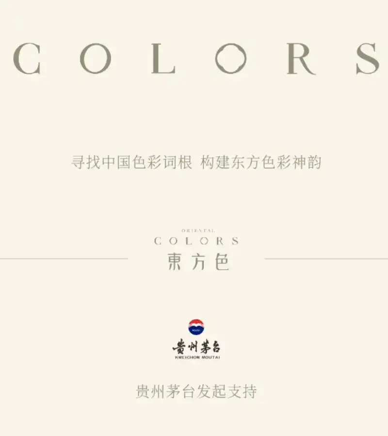